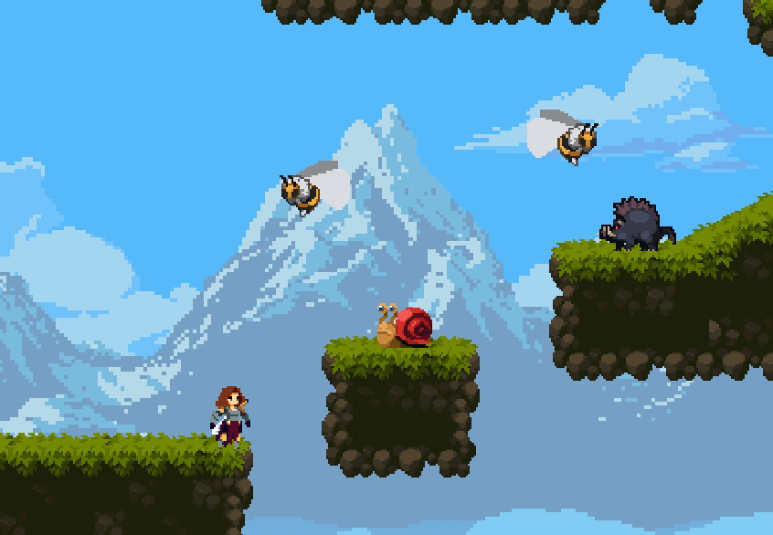
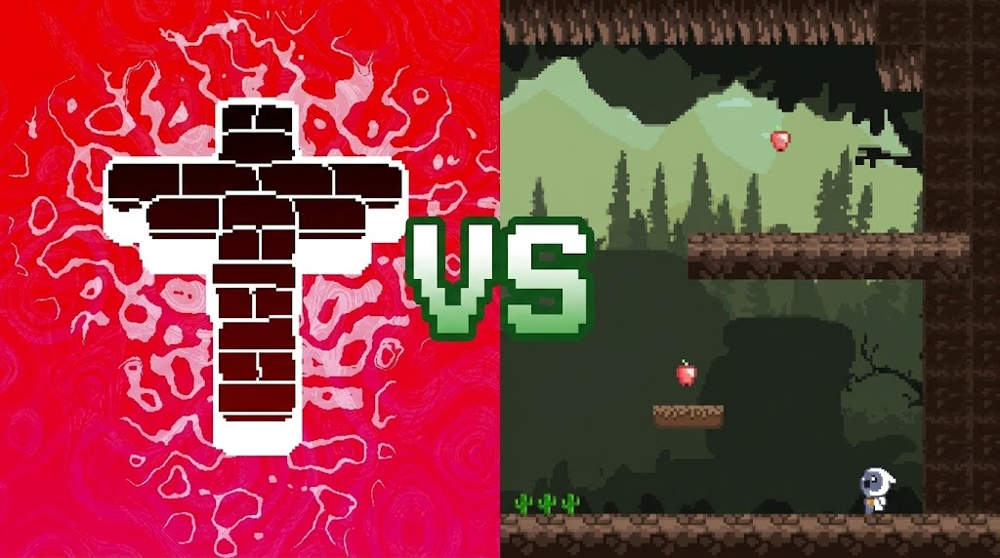

Порівняння Platformer з Grace
На цьому сайті є детальна характеристика двох ігор
Факти про Platformer
- Platformers can be 2D or 3D.
- Platformers can be 2D or 3D.
- platformers have coins you can collect

Факти про Grace
- it was first named the fastering few
- grace has timer and if you dont get to the safe room when that timer ends your basically dead
- its last update was "grace but evil"
Різниця Grace і Platformer
- while to games being pretty familiar garce has other game modes like domains or zen platformers just jump and jump
- platformers have collectable objects like coins grace doesn't have those mechanics
- grace has modifiers like adding etities while platformers dont have modifiers
